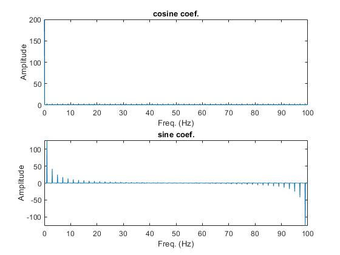
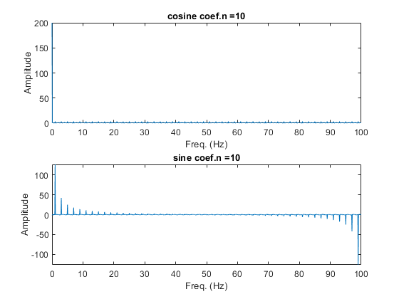
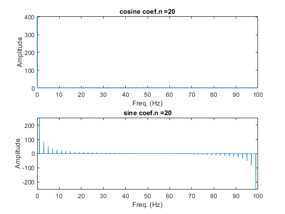
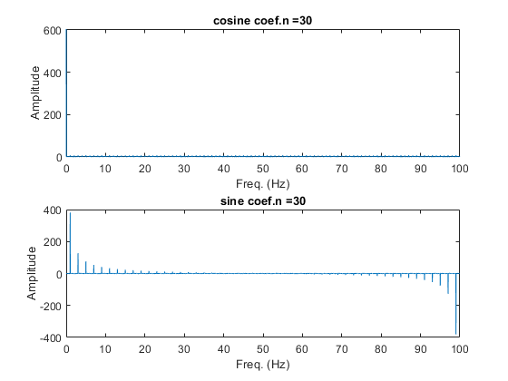
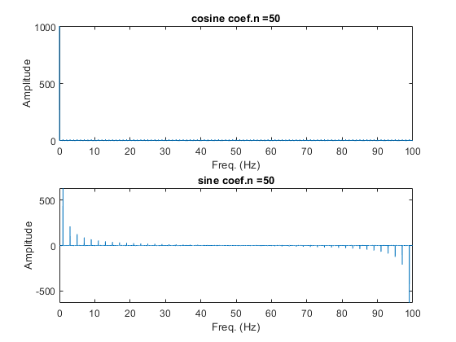
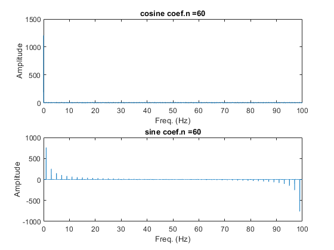
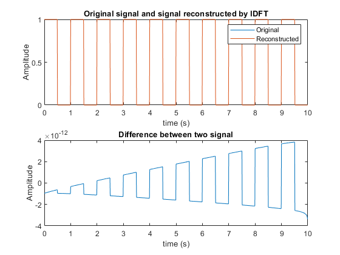
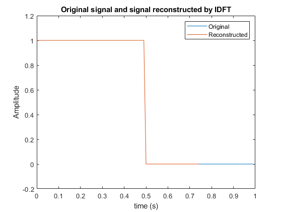
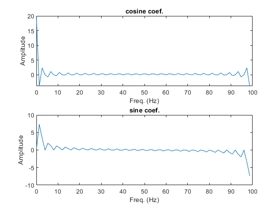

Contents
Problem 2(i)
Find and plot the Fourier coefficientsfor this signal.
clear;clc; dt=0.01;%time interval between two samples T=1;%suppose period = 1s n=10;%using 10 periods t = (0:dt:(T*n-dt)); yt = (square(2*pi.*t./T, 50)+1)./2; [an, bn, fn] = DFT_(yt, t); %[an, bn, fn] = fourier_a_b_coefs(yt, t); subplot(2,1,1); plot(fn,an);title('cosine coef.') xlabel('Freq. (Hz)');ylabel('Amplitude') subplot(2,1,2); plot(fn,bn);title('sine coef.') xlabel('Freq. (Hz)');ylabel('Amplitude')
Problem 2(ii)
Express how these coefficients change when length of time is changed.
clear;clc; dt=0.01; T=1; for i=1:6 n=10*i; t = (0:dt:(T*n-dt)); yt = (square(2*pi.*t./T, 50)+1)./2; [an, bn, fn] = DFT_(yt, t); %[an, bn, fn] = fourier_a_b_coefs(yt, t); figure() str=strcat('n = ', num2str(n)); subplot(2,1,1); plot(fn,an);title(['cosine coef.',str]); xlabel('Freq. (Hz)');ylabel('Amplitude'); subplot(2,1,2); plot(fn,bn);title(['sine coef.',str]); xlabel('Freq. (Hz)');ylabel('Amplitude'); end    
From plots, the relative size of coeficients do not changes. This makes sense, as including more period of the signal does not change the signal, and the Fourier coeficients should not change.
Problem 2(iii)
Compute the time signal by only using Yn.
clear;clc; dt=0.01; T=1; n=10; t = (0:dt:(T*n-dt)); yt = (square(2*pi.*t./T, 50)+1)./2; subplot(2,1,1);plot(t,yt); [an, bn, fn] = DFT_(yt, t); %[an, bn, fn] = fourier_a_b_coefs(yt, t); [ifyt] = iDFT_(an, bn); %[ifyt, t] = inv_fourier_yt(an, bn, fn); hold on;plot(t,real(ifyt));hold off; title('Original signal and signal reconstructed by IDFT'); xlabel('time (s)');ylabel('Amplitude'); legend('Original','Reconstructed'); subplot(2,1,2);plot(t,(yt-real(ifyt))); title('Difference between two signal'); xlabel('time (s)');ylabel('Amplitude');
The reconstructed signal is essentially the same as original signal, as two signal overlap in first plot, and has difference that is essentially zero shown in second plot.
Problem 2(iv)
If the original time signal did not include a full period...
clear;clc; dt=0.01; T=1; n=1; t = (0:dt:(T*n-dt)); yt = (square(2*pi.*t./T, 50)+1)./2; figure() plot(t,yt); [an, bn, fn] = DFT_(yt(1:75), t(1:75)); %[an, bn, fn] = fourier_a_b_coefs(yt(1:75), t(1:75)); [ifyt] = iDFT_(an, bn); %[ifyt, t] = inv_fourier_yt(an, bn, fn); hold on;plot(t(1:75),real(ifyt));hold off; title('Original signal and signal reconstructed by IDFT'); xlabel('time (s)');ylabel('Amplitude'); legend('Original','Reconstructed'); figure(); subplot(2,1,1); plot(fn,an);title('cosine coef.'); xlabel('Freq. (Hz)');ylabel('Amplitude'); subplot(2,1,2); plot(fn,bn);title('sine coef.'); xlabel('Freq. (Hz)');ylabel('Amplitude'); 
If the singal does not include a full period, the reconstructed signal only reflect the part of the signal provided.